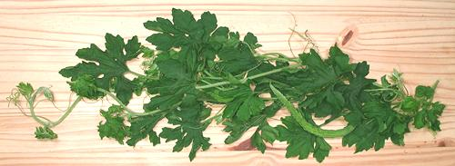
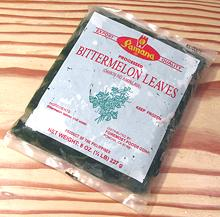

Bitter Melon Leaf

[Dahon ng Ampalayá (Philippine)
Momorica charantia]
This green is popular all over Southeast Asia, including the Philippines.
It is mildly bitter, similar to the fruit but very much less so. The photo
specimens, purchased from an Asian grower at a Los Angeles farmer's market,
were from a bundle about 32 inches long. In the lower right quarter you can
see a very immature bitter melon fruit. Flowers, if any, are small and
yellow.
For information on the fruit see
Bitter Melon. For more on gourds see
Gourds.

Buying:
This green can often be found in larger specialty
markets serving a Southeast Asian community. It can also often be had from
an Asian grower at a local farmer's market. Since most of them grow bitter
melon they can easily supply the leaves. Bitter melon leaves can also be
purchased frozen in some Philipine markets, as pictured to the left.
Cooking:
The leaves and tender tips are used, the main
length of the stems being much too tough. The leaves should go into the
dish in the last minutes, but they do hold up to longer cooking much better
than spinach.
Subst:
If you can't get bitter melon leaves, or do not
like the mild bitterness, the best substitute is Swiss Chard, preferably
the white stemmed variety. Use the leaf parts only and reserve the stems
for some other use. Many recipes suggest spinach, but I consider that too
tart and it gets too mushy when cooked.
Health & Nutrition:
Bitter Melon
tastes bitter and medicinal, so it's got to be good for you, right?
These gourds and their leaves are considered highly medicinal,
particularly effective against type 2 diabetes but also against cancer,
HIV and hemorrhoids. These effects have been neither proven nor
disproven by scientific investigation. Since this is an inexpensive,
commonly available plant usable as-is, the pharmaceutical companies are
completely uninterested in sponsoring major research. Smaller studies
have tended to support some of bitter melon's reputed properties.
While bitter melon does not contain quinine, it has been found to have
similar anti-malarial properties. Anti-viral and antioxidant properties are
also suspected. Bitter melon is high in minerals and vitamin B, but how much
is in a form the body can absorb is not known - again, funding for research
is needed.
There are also negative effects, mostly noted in small children,
particularly hypoglycemic coma. It is also reported able to cause
headaches, though I have not experienced that.
gd_bitlz 101003 - www.clovegarden.com
©Andrew Grygus - agryg@clovegaden.com - Photos on this
page not otherwise credited are © cg1 -
Linking to and non-commercial use of this page permitted